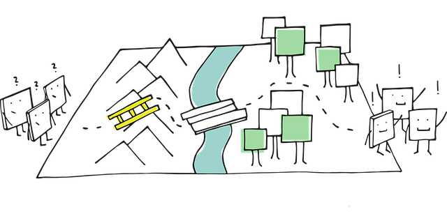

We believe security software like Kicksecure needs to remain Open Source and independent. Would you help sustain and grow the project? Learn more about our 14 year success story and maybe DONATE!

Some users will experience "network obstacles" when using Kicksecure because some internet service providers (ISPs) in various countries block (censor, prevent) access to the public Tor network. In this instance, Bridges may or may not help in circumventing Tor censorship.
This page describes potential solutions for and the organizational background on network obstacles.
Introduction
Kicksecure is a research and implementation project that is based on thousands of freely available software packages. You can learn more about the organizational structure here.
The Kicksecure project does not maintain Tor. Further, the reliance of the Kicksecure platform on Tor does not imply developers are experts about the Tor software.
Network Obstacle Examples
Some users will experience "network obstacles" when using Kicksecure because some internet service providers (ISPs) in various countries block/prevent access to the public Tor network. In this instance, The usage of Bridges is required, For example in China the Great Firewall automatically blocks connections to Tor thus it is necessary to obtain a bridge that works: [1]
- Snowflake: uses ephemeral proxies to connect to the Tor network.
- Private and unlisted obfs4 bridges: users will need to request a private bridge to frontdesk@torproject.org with the phrase "private bridge" in the subject of the email or, if they are tech-savvy, they can run their own obfs4 bridge. Bridges distributed by BridgeDB (HTTPS, email).
- meek-azure: it looks like you are browsing a Microsoft website instead of using Tor. However, because it has a bandwidth limitation, this option will be quite slow.
Effect on Kicksecure
Kicksecure need a working Tor connection because of:
- Updates are torified by default.
- sdwdate
- Onionizing Repositories (optional configuration)
Not having a working Tor on your machine will lead to time/clock and update/upgrade failure.
Footnotes
Categories: Documentation